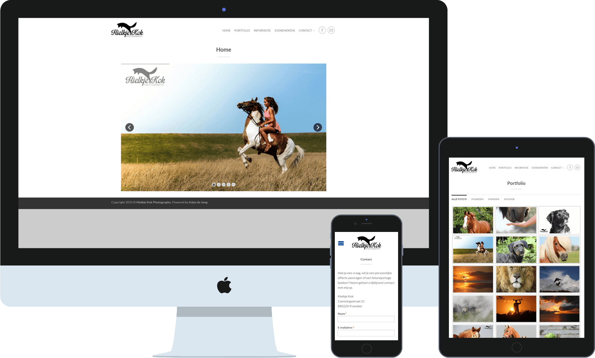

WELKOM BIJ
WIE IS...?
Arjen de Jong
Vanaf kinds af aan projecteer ik mijn creative geest op allerlei verschillende werken, van kleine knutselwerkjes zoals Papercraft tot aan het ontwerpen van websites.
Tijdens mijn opleiding Communicatiesystemen (Communication & Multimedia Design) heb ik veel geleerd over het ontwikkelen van websites. Nu probeer ik de verschillende technieken die ik heb geleerd te verbeteren en mezelf op de hoogte te houden van de laatste ontwikkelingen.
CVEEN AANTAL PROJECTEN...
splinter & de vosch
splinter & de vosch is een Android app ontwikkeld voor splinter & de vosch, een glasstudio dat werkt met Bullseye glas. Omdat zij de officiële vertegenwoordiger van de Bullseye Glass Co. in Nederland en België zijn, kopen veel kunstenaars, bedrijven en particulieren glas in. Men kan gewoon of als cursist werken in de werkplaats.
Voor het bewerken van glas zijn speciale tijden en temperaturen nodig in de oven zodat het glas niet kapot gaat. Deze berekeningen zijn beschikbaar in een Excelbestand, maar het is veel sneller en makkelijker als ieder persoon in de werkplaats zelf op zijn of haar Android toestel de formules kan raadplegen.
De app is ontwikkeld voor alle Androidversies vanaf 4.2 (Jelly Bean). Het design leunt op Material Design en dit is te zien op alle Androidversies.
Mode Brazil
Mode Brazil is een webwinkel waar speciaal geselecteerde Braziliaanse blouses en jeans voor vrouwen wordt verkocht. Deze worden exclusief in Nederland en Duitsland verkocht.
De website is gemaakt in WordPress, waarbij het thema Flatsome en WooCommerce centraal staan. De website is geschikt voor pc, tablet en mobiel en is volledig door mezelf ontwikkeld.
BEKIJK PROJECTHielkje Kok Photography
Hielkje Kok is fotografe van onder meer paarden en natuur. Haar interesse voor het fotograferen ontstond een paar jaar geleden toen ze verzorgpony's fotografeerde. Bij elke fotoshoot probeert ze een bijzonder moment vast te leggen en zichzelf telkens te overtreffen.
De website is gemaakt met WordPress, zodat ze gemakkelijk de site kan beheren en nieuwe foto's kan toevoegen.
BEKIJK PROJECT


Jennifer Wichers
Jennifer Wichers is een professioneel judoka. Als topsporter is het natuurlijk belangrijk om vindbaar te zijn op internet. Deze website is gemaakt om haar eigen personal brand op te zetten.
De website is gemaakt in WordPress waarbij het thema Flatsome is gebruikt. De website is geschikt voor pc, tablet en mobiel.
BEKIJK PROJECT